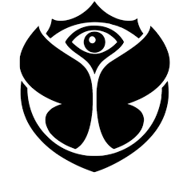
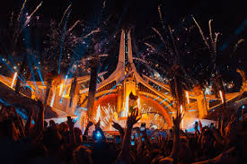

TOMORROWLAND
TOMORROWLAND
Tomorrowland uno de los mejores festivales de musica electronica en el mundo, el festival que una naciones en un mismo lugar para desfrutar de la musica con los amigos este festival ofrece variadades de djs, musica y escenarios ademas que tiene un gran show de luces y de pirotecnia

/cloudfront-us-east-1.images.arcpublishing.com/artear/4P7EIWRAYNEWNPYDITLFJIRGM4.jpg)